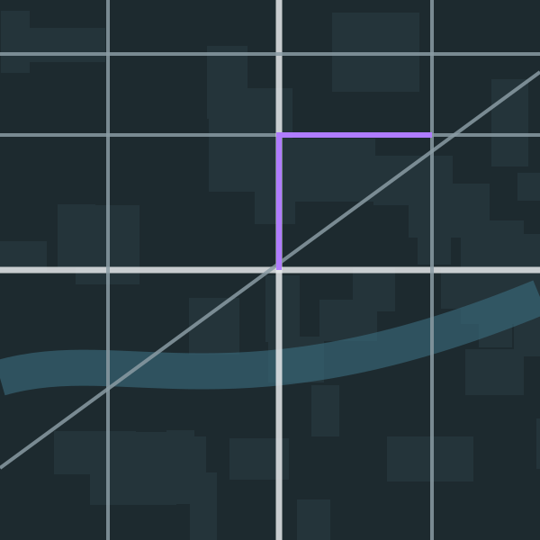

Araç & binek
Hız göstergesi kadranı ilk MH.speedo() çağrısında SVG olarak çizilir; sonraki çağrılar yalnızca yay uzunluğunu değiştirir. RedM için at paneli çekirdekler ve bağ seviyesiyle gelir.

Del Perro Otoyolu22:07
B
Del Perro Otoyolu
Pacific Bluffs · Los Santos
Pegassi Zentorno
34 KTR 2026
0
KM/S
1
Binek
Boadicea
XSürHOkşaBHeybe
FAraçtan in
BEmniyet kemeriTakılı
Dene:
Hız göstergeleri
Kadran, sayısal ve göstergeler
148KM/S4
87
3
KM/S
Binek (RedM)
At canı, dayanıklılığı ve bağ seviyesi
Arap safkanıRachel
YaralıTonik gerekli
EAta bin
HOkşaBağ +1
GFırçalaFırça yok